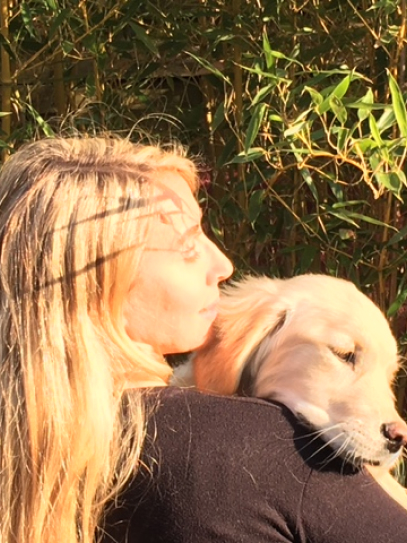

Qui suis-je ?

Béatrice & Sally
Initialement destinée à une carrière commerciale avec un DUT techniques de commercialisation en poche, je reprends mes études d’éducatrice de jeunes enfants, désireuse d’exercer un métier en lien avec l’accompagnement et l’humain.
Passionnée et entourée d’animaux depuis ma plus tendre enfance, je ressens le besoin et l’envie de me lancer dans une nouvelle aventure : celle d’allier ma passion avec mes compétences professionnelles acquises durant toutes ces années.